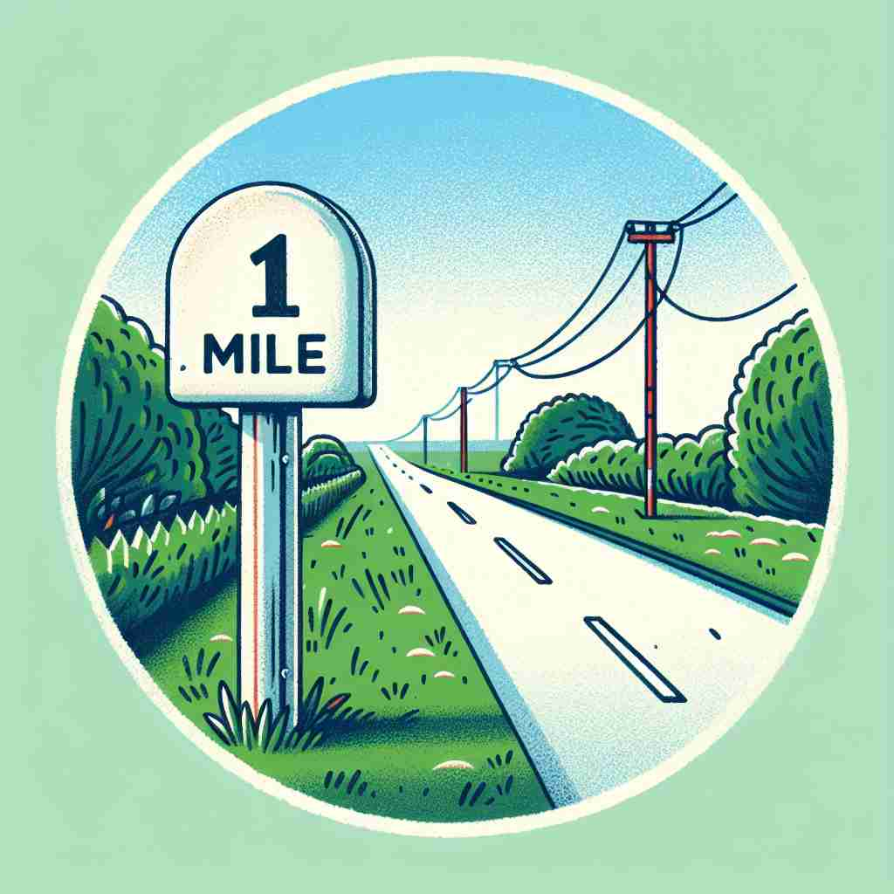

💬 The sign shows one mile to the next town.

💬 The nearest gas station is only one mile away.
🗝️ n. a unit of distance equal to 1,760 yards (about 1.6 kilometers)
🖼️ 在一个阳光明媚的乡村小道上，一对健身爱好者正在晨跑。他们在路边的标牌下停下，上面写着：'距离小镇中心还剩1英里'，这提醒他们还有大约1.6公里的路程要跑完。
🔍 记住'mile'的核心含义是一个特定的距离单位。从这个基本概念出发，它可以用于海上测距、赛跑项目，甚至比喻性地表示'很远'或'很大的差距'。通过联想一英里的具体距离，你可以更好地理解和记忆这个词的各种用法。
💬 The sign shows one mile to the next town.
💬 The nearest gas station is only one mile away.
🌳 源自拉丁词 'milia passuum'，意为“千步”。现代英语中的 'mile' 表示距离单位英里。
💡 可以将 'mile' 联想为 '千步'，帮助记忆其原始的距离意义，即通过'千'来记住其较长距离的概念。
🗝️ n. a unit of distance used at sea, equal to 1,852 meters
🖼️ 在一艘航行于大海的帆船上，船长用望远镜观察前方海岸线，然后对船员们说道：'我们距离港口还有5海里。'这意味着他们还有5 x 1,852米的距离才能到达目的地。
💬 The ship was about 10 nautical miles from the coast.
❓ 基于原有距离单位的特定应用
🗝️ n. a race extending for a mile
🖼️ 在一个拥挤的体育场，观众们正热切地期待一场英里赛跑的开始。跑道上，运动员们深吸一口气，准备在火热的加油声中完成这场1英里的挑战赛。
💬 He won the mile in under four minutes.
❓ 使用距离单位来命名比赛
🗝️ n. a very long way or a great distance
🖼️ 在一个灯火通明的城市街道上，两位久未谋面的朋友站在街角。一个朋友说：'从我家到这里真的是长途跋涉，感觉就像走了一英里。'他在这里用'英里'来形容漫长的旅程。
💬 Her new hairstyle is miles better than the old one.
❓ 将具体距离单位引申为泛指很远的距离